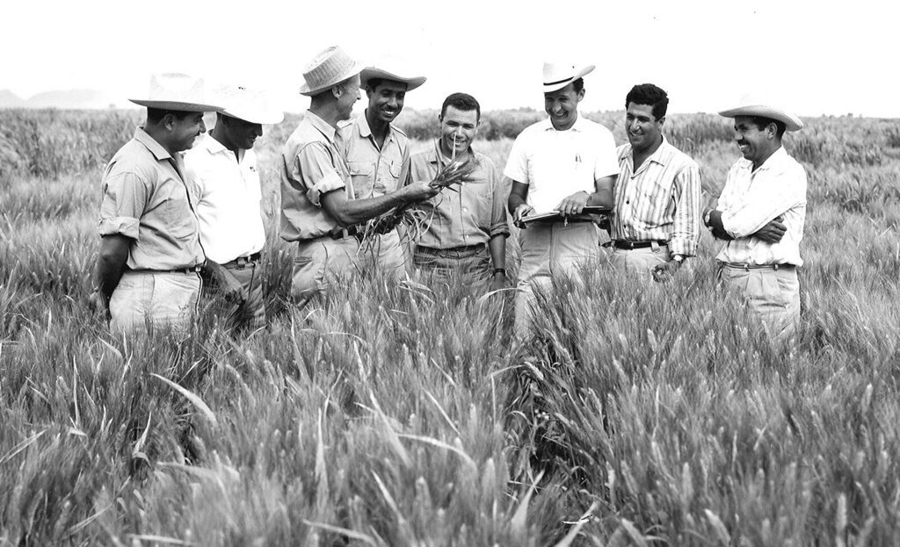

Dr. Norman Borlaug
The man who saved a billion lives

Dr. Norman Borlaug second from left, trains biologists in Mexico on how to increase wheat yields - part of his life-long war on hunger
Here's a time line of Dr. Borlaug's life:
-
1914- Born in Cresco, lowa
-
1933- Leaves his family's farm to attend the University of Minnesota, thanks to a Depression era program known as the "National Youth Administration"
-
1935 - Has to stop school and save up more money. Works in the Civilian Conservation Corps, helping starving Americans. "I saw how food changed them", he said. "All of this left scars on me."
-
1937 - Finishes University and takes a job in the US Forestry Service
-
1938 - Marries wife of 69 years Margret Gibson. Gets laid off due to budget cuts. Inspired by Elvin Charles Stakman, he returns to school study under Stakman, who teaches him about breeding pest-resistent plants.
-
1941 - Tries to enroll in the millitary after the Pearl Harbor attack, but is rejected. Instead, the millitary asked his lab to work on waterproof glue, DDT to control malaria, disenfectant, and other applied science.
-
1942 - Receives a Ph.D. in Genetics and Plant Pathology
-
1944 - Rejects a 100% salary increase from Dupont,leaves behind his pregnant wife, and flies to Mexico to head a new plant pathology program. Over